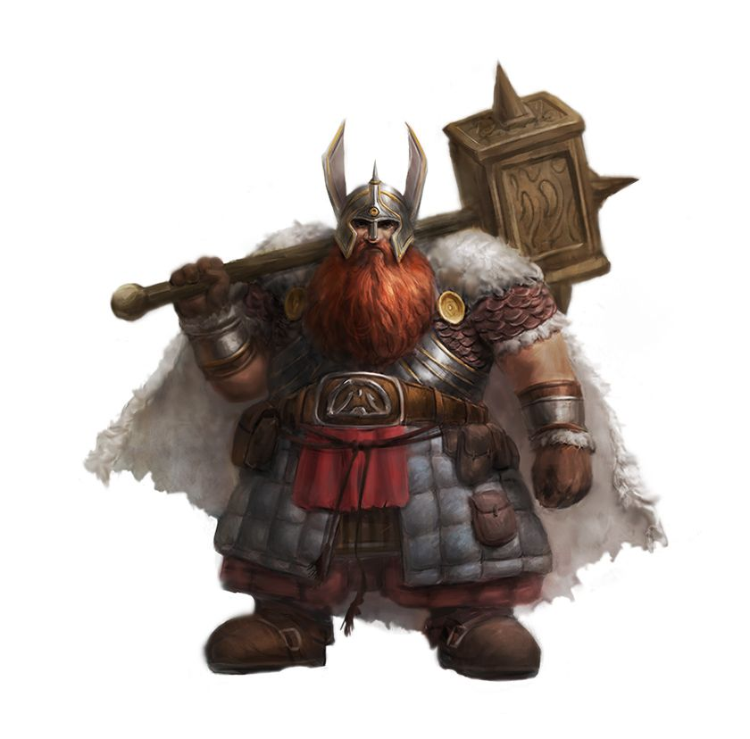

Игровые расы

Человек
Универсальная раса с бонусом ко всем характеристикам (обыденность)
+1 ко всем
Адаптация

Эльф
Грациозные и магически одаренные (снобы) долгожители
+2 Ловкость
Темное зрение

Дварф
Выносливые и крепкие мастера подземелий
+2 Телосложение
Устойчивость